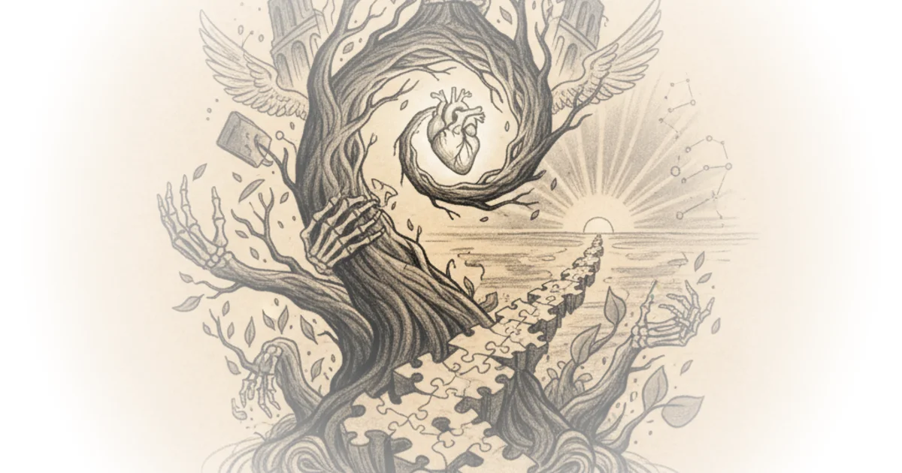

Ernst Bloch offers something rare in philosophy: a way to reframe suffering itself. Rather than asking what's missing from your life, he asks what's overflowing it — and why that overflow can feel so overwhelming.
In his groundbreaking work, Bloch argues that human experience isn't defined by lack. It's defined by surplus. Specifically, the surplus of what he calls hope or anticipatory consciousness: that constant pull toward future possibilities that haven't yet materialized. This runs counter to how most existentialists framed the human condition — as anxiety stemming from missing essence, meaning, or stable ground.

Bloch sees it differently. He sees consciousness as fundamentally temporal, always oriented toward what's not yet real. Not just people anticipating, but the world itself co-evolving with our expectations. Neither exists in isolation. A stone, he says, is becoming a world. And consciousness isn't some inward static thing — it's always moving, always connected to an outside reality that's perpetually in a state of becoming.
This creates what Bloch calls the darkness of the lived moment. On any ordinary day, you might feel something missing from a scene you're part of. You can't quite name it. The world should be different than it is. Something's absent in a way that feels mysterious.
Bloch predicted this feeling would happen precisely because we can never fully grasp any moment. The world always stays partially unknown — we're too close to it, and it changes constantly. We're also unknown to ourselves because we're unfinished, too close to our own potential to see it clearly. We live in what he calls a blind spot of the present moment.
But here's where his argument gets interesting: this incompleteness isn't negative. Every moment carries latent possibilities — future worlds that could be brought about but haven't been yet. Contemplating these futures occupies a huge piece of what humans think about. And how you contemplate these worlds, your relationship to them, dictates who you become.
Now, the same phenomena that get explained by lack — anxiety, nausea, dread — Bloch explains through surplus. Take someone on the couch, dark room, anxious, unmotivated. Why do anything if nothing means anything? That doesn't look like hope. But Block would say this is precisely because they have too much hope. The anticipatory consciousness is overflowing.
Consider anxiety. Kierkegaard framed it as dizziness of freedom — you lack objective direction, you're trapped in not knowing where to go next. But Bloch would say: if at the most fundamental level your being anticipates future possibilities and tries to bring them about, then lying on the couch doing nothing goes against everything you are. That unrealized energy feels uncomfortable.
Or consider nihilism. An existentialist might see someone saying "nothing matters" as touching on objective meaning's absence — honest about the universe having no built-in purpose. But Bloch sees something different: this person was likely hurt in the past. They had an idea of what the world and its possibilities would look like, but reality didn't match their expectations. Disappointment led them to protect themselves by retreating into cynicism.
The message changes completely. Instead of finding the right philosophical argument to create meaning, it's about allowing yourself to feel this core part of what you are — participating, doing things, bringing down cynical barriers that keep you from imagining what's possible.
Bloch calls this cynics' philosophical suicide: denial of something that drives you at an ontological level. Hope is constant and present at practically every level. We're always positioned within time, oriented toward the future, co-evolving with events as they unfold — tensions building, resolution arriving, then dissipating until the next tension.
One of Bloch's most famous applications was music. Why does listening to music fire us up viscerally, while a policy paper that might change things feels boring? Music is a triple-distilled version of that fundamental orientation toward bringing about a future world where things are resolved — chords and rhythms producing tension, then resolution, then release.
Critics might note that framing everything in terms of hope risks underestimating genuine suffering. Not every problem can be explained by surplus expectation. Some anxieties come from real trauma, real lack, real material deprivation. Blochs' framework doesn't account for those.
But the strongest thread running through his work is this: the same phenomena can be explained by multiple framings. And when you reframe struggle as overflow rather than emptiness, everything changes about what kind of action makes sense. Rather than searching for meaning to fill a void, you're looking at what possibilities are already stirring inside you — and what's stopping them from being real.